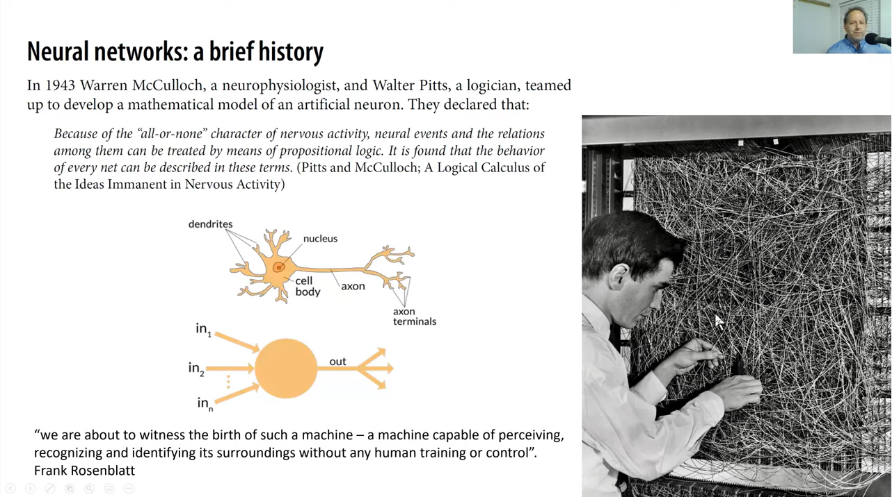
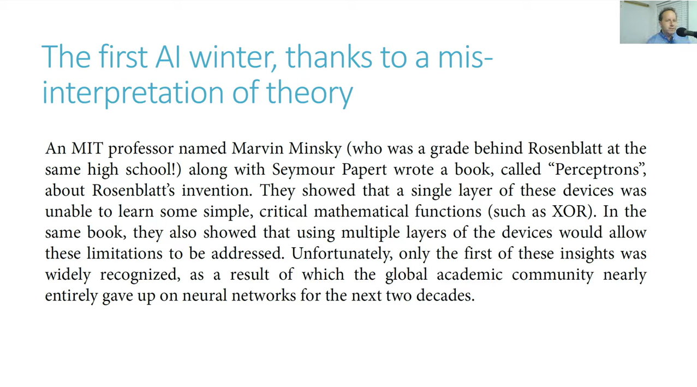
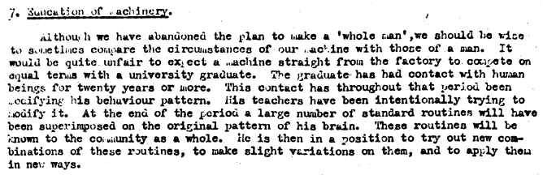

Are neural networks a recent invention? What year was the mathematical model of an artifical neuron developed?
Answer
The model of an artificial neuron was developed in 1943 by Warren McCulloch and Walter Pitts.  In 1969 Marvin Minsky and Seymour Papert published a very important book where they demonstrated that a simple neural network (inputs connected directly to the output layer) would not be able to learn even something as simple and critical as the XOR function! Later in the book they show that with additional layers (single layer is sufficient) a neural network would be able to overcome these limitations (a message that was missed). And so the AI winter began.  The history of neural networks goes way back!
Relevant part of lecture
supplementary material
Intelligent machinery - a paper by Alan Turing from 1948, one of the many very interesting observations he makes in the paper is the importance of environment in the process of learning to be (or being) intelligent! 
{kind=link}
{kind=link}
{kind=link}